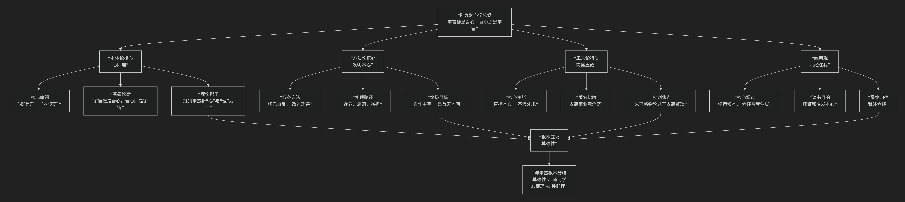

陆九渊
基于陆九渊核心哲学思想
陆九渊是南宋著名哲学家，与朱熹双峰并峙，是 心学 流派的开创者。他的核心思想可以概括为：一种高扬人的道德本心，主张“心即理”，认为宇宙的真理内在于每个人的心中，强调通过“发明本心”的简易功夫来实现道德觉醒，并与朱熹的“格物穷理”之路形成鲜明对比的哲学体系。
陆九渊的思想直指本源，其核心架构与内在逻辑可以通过下图清晰地展现：

以下，我们将沿此逻辑脉络，深入解析陆九渊心学的核心要义。
一、本体论核心：“心即理”
这是陆九渊全部思想的基石，也是最震撼的命题。
核心命题：“心即是理”， “心外无理，心外无物”。
他反对朱熹将“理”客观化、外在化。他认为，宇宙的普遍法则（天理）并不在外部的万事万物中，而是先天地存在于每个人的“本心”之中。 人的道德本心，就是宇宙之理的显现。
著名论断：“宇宙便是吾心，吾心即是宇宙。”
这并不是说个人的意识创造了物质宇宙，而是指 宇宙的终极意义和道德秩序（理），只有在人的道德心灵中才能被真正认识和实现。 人的本心与宇宙之理是同一的、不可分割的。
理论靶子：他批判朱熹的哲学是 “裂天人为二” ，将“心”与“理”割裂开了。朱熹认为需要通过“格物”去外部寻找“理”，而陆九渊认为这是绕远路，因为“理”本就具足于心。
二、方法论核心：“发明本心”
既然“理”在内而不在外，那么修养功夫的方向就完全不同了。
核心方法：“发明本心” 或 “存心、养心、求放心”。
功夫不在于向外研究多少事物，而在于 向内反省、发现、扩充自己固有的道德本心，找回可能被欲望和习气遮蔽的“初心”。
实现路径：
先立乎其大：首先要确立“本心”是根本这一信念。
切己自反：在一切事上反省自己的本心是否被蒙蔽。
剥落：像剥笋一样，剥去物欲、意见、习气等对本心的遮蔽。
减担：减少外在知识的沉重负担，让本心自然显露。
终极目标：“自作主宰”。人若能发明本心，就能不被外物所牵引，达到“仰首攀南斗，翻身倚北辰，举头天外望，无我这般人”的精神独立与自由境界。
三、工夫论特质：“简易直截”
与朱熹“格物穷理”的繁复路径相比，陆九渊的功夫论显得极为“简易”。
核心主张：道德修养的路径是 简易直接 的，因为它直指人心的本源，无需旁求。
著名辩论：在历史性的 “鹅湖之会” 上，陆九渊作诗批评朱熹的治学方法：“易简功夫终久大，支离事业竟浮沉。”
“易简功夫” 指他自己的“发明本心”。
“支离事业” 指朱熹的“格物穷理”，认为其过于繁琐、不得要领。
四、经典观：“六经注我”
对于儒家经典的态度，陆九渊也展现出鲜明的心学特色。
核心观点：“学苟知本，六经皆我注脚。”
如果一个人已经把握了“本心”这个根本，那么 六经（所有经典）都只是在为我本已具足的道理作注解和印证罢了。
读书目的：读书不是为了积累知识，而是为了 启发和印证本心。如果读书反而使本心被书本知识所束缚，那就是“溺于文义”，是本末倒置。
最终归宿：从“我注六经”（解释经典）转向 “六经注我” （用经典来印证和阐发自己的思想）。
五、核心要义总结
理论维度 |
核心命题 |
关键概念与贡献 |
|---|---|---|
心本论 |
“心即理”：宇宙之理内在于人之本心，心外无理。 |
心即理、吾心即是宇宙、心外无物 |
工夫论 |
“发明本心”：为学之方在于向内反省，存养、扩充固有之良心。 |
发明本心、切己自反、剥落、减担、自作主宰 |
方法论特质 |
“易简功夫”：道德修养的路径是简易直接的，批判”支离”学问。 |
易简功夫、支离事业、鹅湖之会 |
经典观 |
“六经注我”：经典是印证本心的注脚，学问的根本在于立心。 |
六经皆我注脚、我注六经、学苟知本 |
六、思想特质与历史影响
主体性的高扬：陆九渊的心学极大地突出了人的道德主体性和尊严，将人从对外在权威（包括经典和繁琐知识）的依赖中解放出来。
与朱熹的根本分歧：这场争论被称为 “朱陆异同” ，其核心是 “尊德性” （陆，强调道德直觉）与 “道问学” （朱，强调知识积累）何者为先的路径之争。
深远影响：陆九渊的思想在当时是少数派，但为明代 王阳明 所继承和发扬光大，最终形成了与程朱理学分庭抗礼的 陆王心学 体系，成为中国哲学史上一条光辉的脉络。
七、总结
总而言之，陆九渊的核心思想在于，他是一位 “本心的呼唤者”和“简易功夫的倡导者” 。他教导我们，真理和道德的源泉不在遥远的天际，也不在汗牛充栋的书籍中，而就在我们每个人当下的内心。人生的首要任务，不是向外无尽地求索，而是向内深刻地反省，擦亮被尘埃遮蔽的本心，让它如明镜般自然映照出天理的光辉。
他的全部工作是对**儒家道德实践**的一次方向性扭转。在朱熹理学如日中天的时代，他独树一帜，开辟了一条内向的、直指人心的修养路径，为后来的心学运动奠定了基石。在这个意义上，陆九渊不仅是一位哲学家，更是一位唤醒内在良知的精神导师。
- Grok
- 基于陆九渊核心哲学思想的陈京元“寻衅滋事罪”案分析评论
- An Analysis of the Chen Jingyuan “Picking Quarrels and Provoking Trouble” Case Based on Lu Jiuyuan’s Core Philosophical Ideas
- 一、陆九渊哲学核心思想概述：心即理与直觉道德修养
- I. Overview of Lu Jiuyuan’s Core Philosophical Ideas: The Mind Is Principle and Intuitive Moral Cultivation
- 二、以陆九渊哲学核心思想评析本案
- II. Analysis of the Case Based on Lu Jiuyuan’s Core Philosophical Ideas
- 三、结语：重振心性合一，推动觉醒新生
- III. Conclusion: Reviving Mind-Nature Unity for Awakening’s Rebirth
- Copilot
- ChatGPT
- DeepSeek
- Gemini
- Qwen